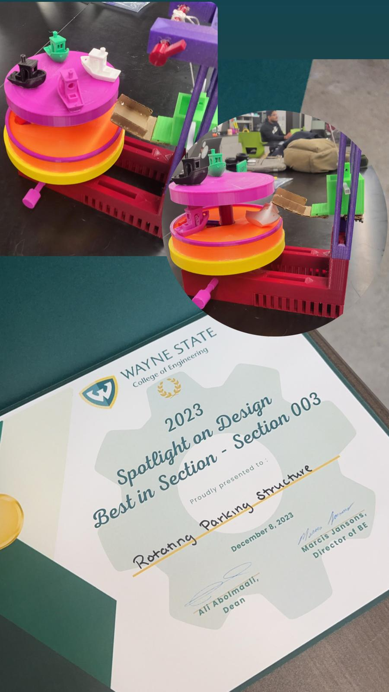

Overview
The Rotating Parking Structure project aims to address urban parking challenges by providing an efficient, space-saving solution. Utilizing NX CAD for design, the project incorporates a rotating mechanism to maximize parking space usage, making it an ideal solution for densely populated areas. This innovative design minimizes the time spent searching for parking, enhancing the user experience.
Problem Statement
The Siemens NX CAD Rotating Parking Structure addresses urban parking challenges by providing an innovative and space-saving solution. Utilizing NX CAD, it incorporates 3D modeling with a rotation mechanism, an elevator system for vertical movement, and a gear-operated structure for seamless car retrieval.
Libraries & Tools Used
- NX CAD: Used for 3D modeling and design of the rotating parking structure.
Features
- Rotating mechanism to save space and reduce vehicle retrieval time.
- Elevator system for vertical movement, allowing cars to go up and down.
- The top section moves in the opposite direction to the bottom section for efficient parking.
- Operated by a gear system for smooth and reliable functionality.